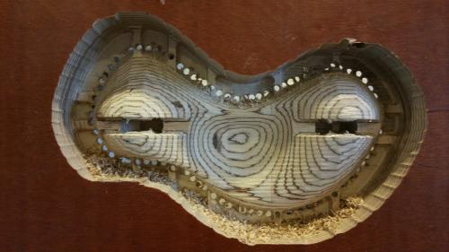
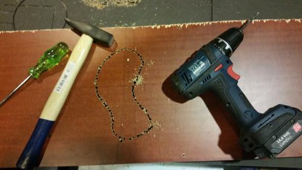

Conception
When I was asked to make the Certificates for the participants of the second BioHack Academy (BHA), I was keen to explore how a combination of materials and fabrication techniques could be used to create an object that represented that values of the Fablab and the BioHack Academy.
Design
The design stemmed from a set of values that I wanted to embody within the certificates, these values were:
- Critical design
- Exploration of Fablab machines and fabrication techniques
- A cohesive design that did not appear overly complicated
- Customisable
- Draws inspiration from biology and the machine prototypes created by the Wetlab
- Representative of the values of the Fablab and the BHA
After several design iterations, I settled on the idea of having the BHA logo appearing to float above a CNC milled base. A mycelium "BHA" would sit supported by a mdf logo, which was to 'float' encased in perspex above a CNC milled base. The screws that hold the perspex together are the same screws used in the machine prototypes. Finally, the base was to be able to accommodate LEDs which were to illuminate the engraved vertical text on either side. The positioning of the text represents growing and emphasises the floating of the logo. The font of the text is similar of that ised in coding, representing the Adruino aspects of the BHA.
This is the final iteration of the design, modeled in Rhinoceros software
Experimenting with the BHA logo
Lasercutting
The lasercutting part of the process involved cutting the BHA logo from MDF and inlaying it into the 'negative' cut in perspex. The challenges in cutting the MDF came from the fragility of the logo design. There were a lot of pieces that needed to be re-cut because they fell through the honeycomb bed! This was overcome by putting paper tape under the MDF, stopping smaller pieces from falling through.
The challenges of cutting the perspex came from the burning markes caused by the bed heating up. This was overcome by raising the perspex 6 mm by supporting it on both sides of the cut area with two layers of MDF.
Mycelium Moulds
The initial idea of incorporating the mycilium into the design involved growing the mycilium in moulds and then onve hardened, inserting them into the certificates. This ended up being a bit of a disaster. I failed to steralise the moulds properly and eventually there was anything but mycelium growing in the moulds! I also used far too much nutrient agar solution.
Attempt at creating a mycelium mould by engraving perspex with the laser cutter
Applying the nutrient agar solution to the moulds
BioHacker Tim's customisation of his certificate
Milling
The milling part of the process started with the design of the piece. The base was originally designed parametrically, so that different iterations could be tested. It was eventually decided that supporting the perspex on two sides, and not in the middle, emphasised the floating idea. Further to this, the asymetrical, organic form represents growth and tests the limits of the CNC milling machine and the material being milled.
Milling challenges included getting to know that workflow of the software and machine, and nuinces of the milling bits, as well as trying to increase efficiency of production. The milling was done in 3 stages. The first stage was prototyping, where my design was tested in terms of its suitability for the machine and for the material (wood). The challenge here was to ensure that the design was not too deep, so that a milling bit could reach all the way through the wood so that an LED light could be shine through the bottom. The prototype worked reasonably well with the only problem being that it took all day to set up the process and execute the job. The second stage of lilling was in the mass production. I was required to produce 10 more bases, so I decided to do the milling in batches of six, allowing for an extra base.
I used two layers of ply wood, glued together, to reach the required height. The first attempt at a bacth of bases was not particularily successful, I was very happy with the layered effect of the ply, the machine lost its xy 'zero' point towards the end, resulting in some manuel work to finish the job.
Creating the prototype of the base


Extracting the base after the first batch - I swear it was the fault of the machine!
Batch #2
{kind=link}
{kind=link}

This work is licensed under a Attribution Share Alike Creative Commons license